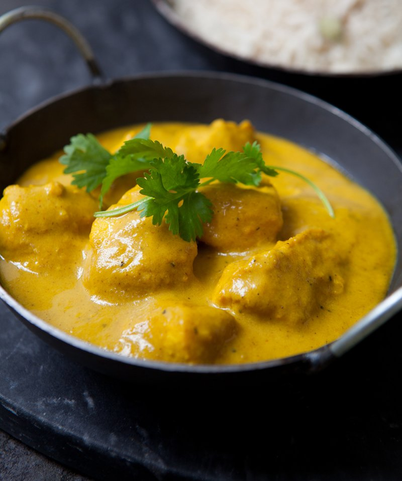

Chicken Korma

Description
Chicken Korma is a luxurious and aromatic dish that hails from the Indian subcontinent,
renowned for its creamy, rich sauce and tender pieces of chicken. The dish is a staple
in Mughlai cuisine, which is known for its sophisticated use of spices and nuts. Chicken
korma is prepared by marinating the chicken in a mixture of yogurt and a blend of fragrant
spices such as garam masala, cumin, and coriander, which imparts a warm and inviting flavor
profile. The marinated chicken is then gently cooked with a sauce made from onions, garlic,
ginger, and often includes ground almonds or cashews, which contribute to its characteristic
thickness and texture.
The color of chicken korma can range from white to a mild yellow, owing to the use of cream
or coconut milk, and sometimes a pinch of saffron. It’s typically garnished with fresh cilantro
and served with naan, rice, or other Indian bread, making it a comforting and satisfying meal.
The dish’s velvety sauce is a perfect medium for the spices, delivering a taste that is complex
yet balanced, with a subtle sweetness that comes from the addition of a little sugar or honey.
Chicken korma is a beloved dish for its ability to bring a touch of indulgence to the dining table,
embodying the essence of a cuisine that celebrates the art of slow cooking and the joy of sharing
a meal with others. Whether enjoyed in a festive gathering or a quiet dinner at home, chicken korma
remains a testament to the rich culinary heritage from which it originates
Ingredients
- 4 boneless, skinless chicken breasts (about 600g)
- 25g low-fat natural yoghurt
- 1 tbsp sunflower oil
- 2 large onions, chopped (400g prepared weight)
- 4 garlic cloves, peeled and sliced
- 20g chunk of fresh root ginger, peeled and finely grated
- 12 cardamom pods, seeds crushed
- 1 tbsp ground cumin
- 1 tbsp ground ginger
- 1/2 heaped tsp ground tumeric
- 1/4 tsp hot chilli powder
- 1 bay leaf
- 4 whole cloves
- 1tbsp plain flour
- small pinch of saffron
- 2tsp caster sugar
- 1/2 tsp fine sea salt, plus extra to season
- 300ml cold water
- 3 tbsp double cream
- freshly ground black pepper
- fresh coriander, roughly torn, to garnish (optional)
Steps
- Cut each chicken btreast into 8 or 9 bite-sized pieces,
season with black pepper and put them in a non-metallic bowl.
Stir in the yoghurt, cover with cling filmand chill for a minimum
of 30 minutes but ideally 2-6 hours
- Heat the oil in a large, non-stick saucepan and add the onions, garlic
and ginger. Cover and cook over a low heat for 15 minutes untill very
soft and lighhtly coloured. Stir the onions occasionally so they don't start
to stick
- Once the onions are softened, stir in the crushed cardamom seeds, cumin, coriander,
tumeric, chilli powder and bay leaf. Pinch off the ends of the cloves into the pan
and throw away the stalks. Cook the spices with th onions for 5 minutes, stirring
constantly.
- Stir in the flour, saffron, sugar and 1/2 a teaspoon of salt, then slowly pour the water
into the pan, stirring constantly. Bring to a gentle simmer, then cover and cook for 10
minutes, stirring occasionally. Remove the panfrom the heat, take out the bay keaf and
blitz the onion mixture with a stick blender until it is as smooth as possible. You can
do this in a food proccessor if you prefer, but let the misture cool slightly first. The
sauce can now be used right away or cooled, covered and chilled until 10 minutes before
serving.
- Drain the chicken in a colander over the sink, shaking it a few times - you want the meat
to have just a light coating of yoghurt. Place a non-stick frying pan on the heat, add
the sauce and bring it to a simmer. Add the chicken pieces and cream and cook for about
10 minutes or untill the chicken is tender and cooked through, stirring regularly. Exactly
how long the chicken will take depends on the size of your pieces, so check a piece after 8
minutes - there should be no pink remaining
- Adjust the seasoning to taste, spoon into a warmed serving dish and serve garnished with fresh
coriander if you like